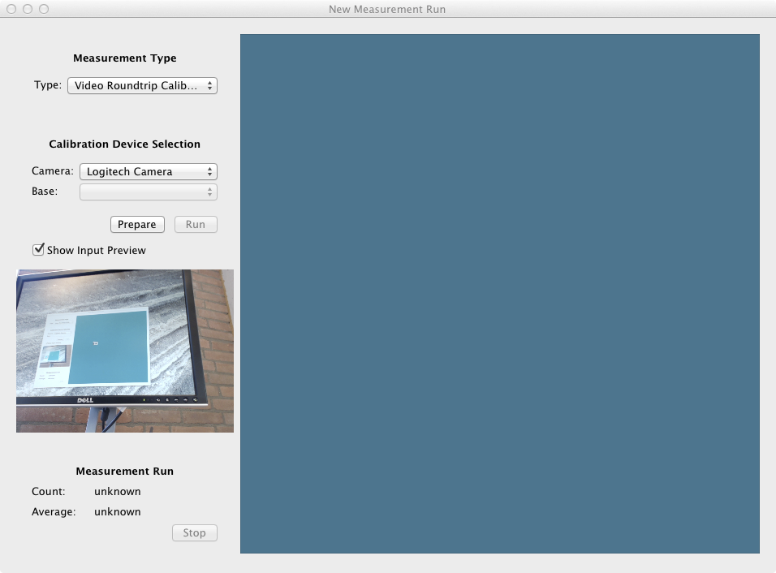
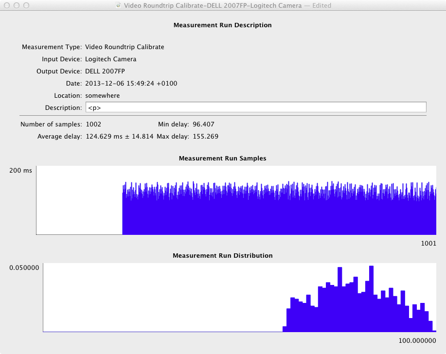

Table of Contents:
VideoLat is a tool to help you analyse video delays, mainly aimed at conferencing applications. Basically, it works by generating a barcode on-screen and then measuring how long it takes until that same barcode is detected by the camera. This method of measurement also takes into account delays caused by camera, grabber hardware, video output card and the video display.
VideoLat Primarily takes round-trip measurements, with the same system both benerating and detecting the barcodes. A future release will also allow asymetric measurements, using a videoLat-system on both ends.
A future version will also do audio delay measurements, and audio-video synchronization measurements.
The general workflow is that videoLat runs on a system that is completely separate from the system under test, usually a MacBook or something similar. You should now first do a calibration run, which will teach videoLat about the delay of the camera and screen used in the test system. After the calibration run you can do real measurements with the exact same hardware setup, the calibration run results will the be subtracted from the real data giving you the delay of the system-under-test.
In summary, you will always do two measurements: a first one of the test system itself, and then a second one of the system that you are really interested in.
Here is a screenshot of videoLat when you start it the first time:
The left side of the window is the control area, the right side is where the QR-code data will be displayed. The control area reads from top to bottom.
In the control area, you first select Measurement Type. Your first measurement should be a Video Roundtrip Calibrate.
Next, you select the camera you want to use as input. Output from the selected camera is shown in the preview area. Use this to position your camera (and window!) so that it has a clear view of the blue square, with not too much distortion. Using a mirror is possible, rotation is no problem, and a fair bit of skewing can be handled too.
Now you press Prepare. This will show a couple of QR-codes and determine mirroring, approximate delays and such. After the preparation phase you should refrain from changing the physical setup. If the preparation phase is successful the Run button will be enabled. If it is not successful you may have to re-select your measurement type or camera to try again.
Now you press Run and the real measurement will start. In the data area you will see QR-codes, and in the Measurement Run area you will see how many succesful measurements have been taken and current average delay and standard deviation. When you are happy (or bored) press Stop and the data view window (below) will open.
Determining the number of measurements to be taken is a bit of a black art. For the calibrations you want a distribution of measurements that is relatively close to a normal distribution, because it makes your real measurements more trustworty. Start with 500 or 1000 samples, and inspect the distribution in the data view window.
Here is a screenshot of the data view window, which automatically opens when you stop a measurement run, and also when you open a pre-existing measurement:
The window shows input and output devices used, some metadata, measurement values and two graphs: one of the individual measurement values and one of their distribution. there is also a free text description field that you can use for your own reference.
If you are happy you should save your calibration data. In future runs it can be used to base real measurements on. It is also possible to export the data, see the next section.
After you have done a calibration run of your camera, screen and other hardware you are ready to take a measurement of the system under test. Open a new document, but this time select Measurement type Video Roundtrip.
Again, you select the camera, but now you also select the base calibration run, which should use the exact same hardware as you are using now (camera, display, etc). Now you make point the camera of the system under test at the blue square, and you point the camera of the measurement system at the screen of the system under test. Confirm in the preview window that the blue square is visible.
At this point follow the same procedure as for calibration: Prepare, Run, Stop. The data view will open again.
For a normal run you should save the data in your Documents folder, for example. In addition, you can export the measurement run as a set of three comma-separated value files, which are importable into spreadsheets, graphing packages and other programs. The -description.csv file has the metadata, -measurements.csv has the raw data points and -distribution.csv has the distribution.
If you have access to the internals of the system-under-test it is possible to take measurements there as well, because videoLat encodes the current timestamp in the barcode.
Because the camera of the system under test needs to see the videoLat screen and vice versa it may be best to get a separate USB camera attached to the videoLat system, using the builtin iSight may make it difficult to adjust things.
Important: you should start with the self-measurements, and reason about the data you obtain. All components involved (camera, display and computer) are finicky and I have seen completely unexplainable results that went away when swapping, say, monitors. Lack of trust in your measurement equipment leads to lack of trust in your system measurements.
An earlier version of videoLat and the principles behind it is described in the paper "User-centric video delay measurements" by Jack Jansen and Dick Bulterman, DOI=10.1145/2460782.2460789. The corresponding presentation slides and presentation video are available too.
VideoLat was written by Jack Jansen, Jack.Jansen@cwi.nl, and is copyright (c) 2013 Stichting Centrum Wiskunde & Informatica, Amsterdam, the Neterhlands. It is open source, licensed under the GNU General Public License (GPL).
VideoLat depends on the ZBar bar code reader, its included QR code reader and the Zint bar code generator. These tools are Copyright (c) Jeff Brown, Timothy B. Terriberry and "Robin", and licensed under LGPL and GPL.
The labjack Python driver and liblabjack are Copyright (c) 2010 LabJack corporation and under a BSD-like license. They use libusb which is licensed under LGPL.